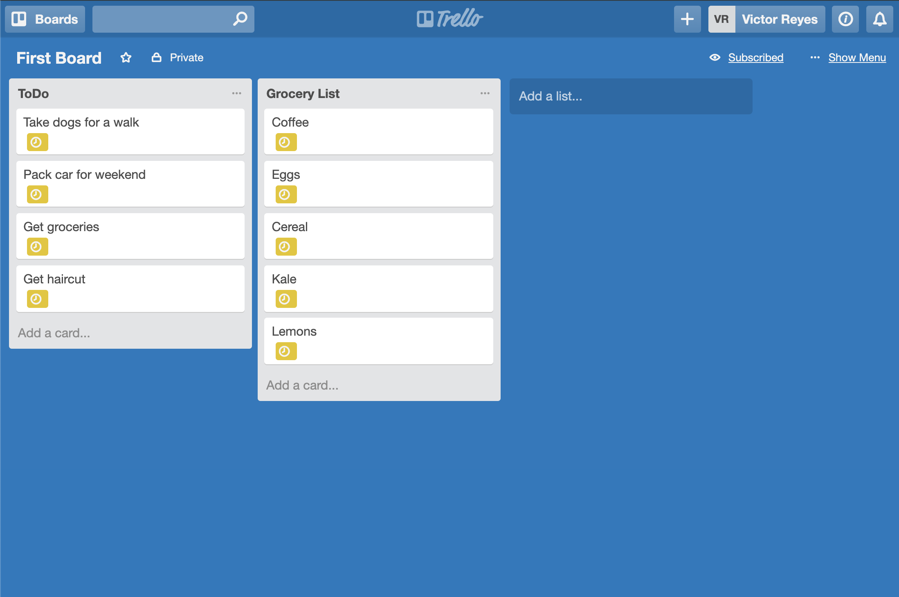
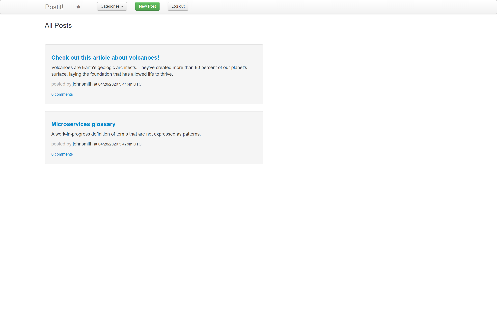

Kelvin Wong
I'm a full-stack Software Engineer based in London, UK, with experience in Ruby, JavaScript / Node.js, Golang, PostgreSQL, Docker, AWS, Rails, and React.
Most recently, I built Apex, an API proxy for microservices that provides one place to log and control all service-to-service traffic.

Apex is an API proxy for microservices that provides one place to log and control service-to-service traffic.
With Apex, a user can view the logs for all service-to-service traffic by querying just one table, while grouping all requests and responses that belong to the same workflow. They can also define and update traffic rules, such as the number of times to retry a request, in one configuration store.
READ THE APEX CASE STUDYOther projects
-

Rello
Trello-like Kanban board with back-end API built with Rails, and front-end UI built with React + Redux
-

Post It
Reddit-like social news and discussion app built with Rails
-

Todos
To-dos tracker built with Node.js, Express.js, JavaScript, jQuery, Handlebars, HTML and CSS.